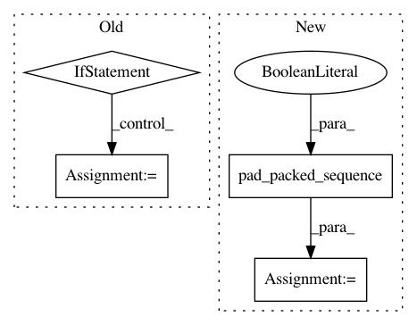

57cf91dbd3d6cdaa1b239320ba693a5b7bfbf02e,src/lm.py,RNNLM,forward,#RNNLM#Any#Any#Any#,27
Before Change
def forward(self, x, lens, hidden=None):
emb_x = self.emb(x)
if self.dropout:
emb_x = self.dp(emb_x)
// Not using pack
if not self.training:
self.rnn.flatten_parameters()
//packed = nn.utils.rnn.pack_padded_sequence(emb_x, lens,batch_first=True)
outputs, hidden = self.rnn(emb_x, hidden) // output: (seq_len, batch, hidden)
After Change
self.rnn.flatten_parameters()
packed = nn.utils.rnn.pack_padded_sequence(emb_x, lens, batch_first=True, enforce_sorted=False)
outputs, hidden = self.rnn(packed, hidden) // output: (seq_len, batch, hidden)
outputs, _ = nn.utils.rnn.pad_packed_sequence(outputs, batch_first=True)
if self.emb_tying:
outputs = F.linear(self.dp2(outputs),self.emb.weight)
else:
outputs = self.trans(self.dp2(outputs))
In pattern: SUPERPATTERN
Frequency: 3
Non-data size: 4
Instances
Project Name: Alexander-H-Liu/End-to-end-ASR-Pytorch
Commit Name: 57cf91dbd3d6cdaa1b239320ba693a5b7bfbf02e
Time: 2019-09-25
Author: alexliu36@gmail.com
File Name: src/lm.py
Class Name: RNNLM
Method Name: forward
Project Name: pyprob/pyprob
Commit Name: 9eae70be43bee8dde7fd4c75c2534331a10de6a1
Time: 2017-05-06
Author: atilimgunes.baydin@gmail.com
File Name: infcomp/modules.py
Class Name: Artifact
Method Name: loss
Project Name: pyannote/pyannote-audio
Commit Name: 7cd70e385bbbc12c0a6df41528b8dedbe61a43f8
Time: 2018-06-29
Author: bredin@limsi.fr
File Name: pyannote/audio/embedding/models.py
Class Name: TristouNet
Method Name: forward